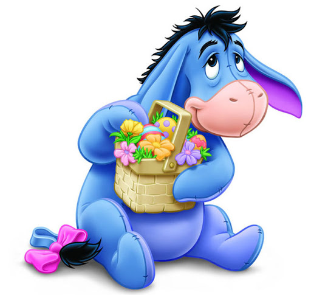

Ослик Иа-Иа — персонаж серии книг и мультфильмов о Винни-Пухе. Это типичный меланхолик с грустными глазами и обреченными нотками в голосе, который также выступает проводником неожиданной мудрости и философии. Поклонники любят его за иронию, искренность и умение довольствоваться малым — кто еще см
Його друзі:Вінні Пух ...Ви́нни-Пух[К 1] (англ. Winnie-the-Pooh) — плюшевый мишка, персонаж двух повестей и двух сборников стихотворений английского писателя Алана Милна, впервые появившийся в печати в 1926 году.
Один из самых известных героев детской литературы XX века. В 1960—1970-е годы, благодаря пересказу Бориса Заходера, а затем фильмам студии «Союзмультфильм», где мишку озвучивал Евгений Леонов, Винни-Пух стал очень популярен и в СССР.
Содержание
1 Биография
1.1 Имя
1.2 Характер
2 Цикл «Винни-Пух»
2.1 Мир произведения
2.2 Язык
2.3 Место в творчестве Милна
2.4 Философия
3 Публикации
3.1 Продолжение
3.2 За рубежом
3.2.1 В СССР и России
4 Экранизации
4.1 США
4.2 СССР
5 Народное творчество
6 Игры
7 Игрушки Кристофера Робина
8 Памятники
9 Улицы имени Винни-Пуха
10 Факты
11 Примечания
12 Литература
13 Ссылки
Посилання на книгу